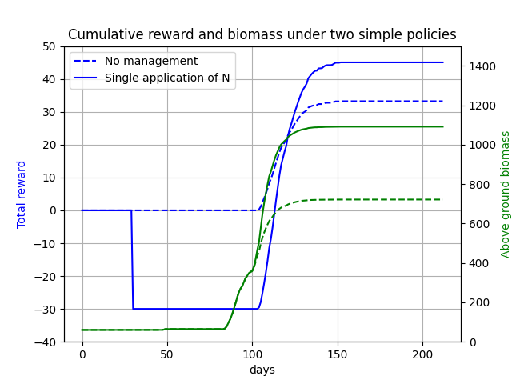

Examples
Basic
Here we show a basic example of how to use the PCSE Environment. This example requires pcse at commit 4ef02c7.
# Import the PCSE Environment class
from pcse_gym.envs.common_env import PCSEEnv
# PCSE contains various utility classes to load parameter configurations
from pcse.fileinput import CABOFileReader, YAMLCropDataProvider
from pcse.util import WOFOST80SiteDataProvider
# Create and configure a PCSE-Gym environment
# Note: the following configuration has not been chosen for its realism
env = PCSEEnv(
model_config='Wofost80_NWLP_FD.conf',
agro_config='../pcse_gym/envs/configs/agro/potato_cropcalendar.yaml',
crop_parameters=YAMLCropDataProvider(force_reload=True),
site_parameters=WOFOST80SiteDataProvider(WAV=10, # Initial amount of water in total soil profile [cm]
NAVAILI=10, # Amount of N available in the pool at initialization of the system [kg/ha]
PAVAILI=50, # Amount of P available in the pool at initialization of the system [kg/ha]
KAVAILI=100, # Amount of K available in the pool at initialization of the system [kg/ha]
),
soil_parameters=CABOFileReader('../pcse_gym/envs/configs/soil/ec3.CAB'),
)
# Reset/initialize the environment to obtain an initial observation
o = env.reset()
By default, the PCSE Environment observations contain the crop model output variables as specified by the config file (in this case Wofost80_NWLP_FD.conf), as well as weather statistics. Printing the observation gives the following initial information:
{
'crop_model': {
'DVS': [0.0],
'LAI': [0.14400000000000002],
'TAGP': [60.0],
'TWSO': [0.0],
'TWLV': [48.0],
'TWST': [12.0],
'TWRT': [15.0],
'TRA': [0.0003297839759043299],
'RD': [10.0],
'SM': [0.4],
'WWLOW': [22.479999999999997],
'RFTRA': [1.0],
'NNI': [1.0],
'KNI': [1.0],
'PNI': [1.0],
'NPKI': [1.0],
'RFNPK': [0.999999989],
'NAVAIL': [10.0],
'PAVAIL': [50.0],
'KAVAIL': [100.0],
'Ndemand': [0.0],
'RNuptake': [0.0],
'Pdemand': [0.0],
'RPuptake': [0.0],
'Kdemand': [0.0],
'RKuptake': [0.0],
'NamountSO': [0.0],
'PamountSO': [0.0],
'KamountSO': [0.0]},
'weather': {
'IRRAD': [2240000.0],
'TMIN': [-1.24],
'TMAX': [3.75],
'VAP': [6.705809327134126],
'RAIN': [0.028000000000000004],
'E0': [0.0],
'ES0': [0.0],
'ET0': [0.0032214147993529507],
'WIND': [2.23]
}
}
Next, we can define actions to apply to the crops. By default, the PCSE gym supports irrigation and fertilization
# Define an action that does nothing
a = {
'irrigation': 0,
'N': 0,
'P': 0,
'K': 0,
}
# Apply it to our environment, to see how the PCSE model progresses in 1 day without interference
o, r, done, truncated, info = env.step(a)
# By choosing different action values we can evaluate the effects of different agro-management policies. Which actions are supported by default depends on the PCSE model, which can be extended manually.
From the model, we obtain an observation of how the crops behave on day
2. Also, we obtain a scalar reward that indicates the desirability of
the current crop state. By default, this has been set to the difference
in WSO (weight storage organ, that is eventually the yield that is
harvested) that was accumulated during this time step. Furthermore, the
environment gives a boolean done flag indicating whether the
environment has terminated, as well as an info dict that provides
the possibility of returning additional information that might be of
interest for analysis/debugging.
We can run the model until termination, to observe how the crops would develop completely without interference:
r_sum = 0
done = False
env.reset()
while not done:
o, r, done, truncated, info = env.step(a)
r_sum += r
print(f"TWSO: {o['crop_model']['TWSO'][0]:.2f} Total reward: {r_sum:.2f}")
The main objective of reinforcement learning is to build a policy that dictates when to choose which actions to maximize the expected eventual sum of rewards.
Customization
The default implementation of the environment bases its reward purely on eventual yield. For the majority of use cases this is too simplistic. The PCSE gym environment has been designed to be easily modifiable to the required complexity. For example, the code below shows how we could extend the PCSE environment to account for fertilizer prices and the costs of its application.
from pcse_gym.envs.common_env import PCSEEnv
class CustomPCSEEnv(PCSEEnv):
def __init__(self, *args, **kwargs):
super().__init__(*args, **kwargs)
# N price per unit
self._n_price = 2
# Yield price per unit
self._y_price = 1
# N application costs
self._na_price = 10
# Keep track of how much nitrogen has been applied in the last time step
self._na = 0
def _apply_action(self, action):
super()._apply_action(action)
# Keep track of the amount of nitrogen that was applied
self._na = action.get('N', 0)
def _get_reward(self, *args, **kwargs) -> float:
# Obtain the default reward, reflecting the increase in yield
r = super()._get_reward(*args, **kwargs)
# Balance the yield price with that of the costs of the applied N
r = r * self._y_price - self._na * self._n_price
# If N was applied, subtract the application costs
if self._na != 0:
r -= self._na_price
return r
The environment class retains the functionality of the default PCSEEnvironment class, but has a modified reward function.
from pcse.fileinput import CABOFileReader, YAMLCropDataProvider
from pcse.util import WOFOST80SiteDataProvider
env = CustomPCSEEnv(
model_config='Wofost80_NWLP_FD.conf',
agro_config='../pcse_gym/envs/configs/agro/potato_cropcalendar.yaml',
crop_parameters=YAMLCropDataProvider(force_reload=True),
site_parameters=WOFOST80SiteDataProvider(WAV=10, # Initial amount of water in total soil profile [cm]
NAVAILI=10, # Amount of N available in the pool at initialization of the system [kg/ha]
PAVAILI=50, # Amount of P available in the pool at initialization of the system [kg/ha]
KAVAILI=100, # Amount of K available in the pool at initialization of the system [kg/ha]
),
soil_parameters=CABOFileReader('../pcse_gym/envs/configs/soil/ec3.CAB'),
)
o = env.reset()
# Define an action that applies N
a = {
'irrigation': 0,
'N': 10,
}
o, r, done, truncated, info = env.step(a)
print(r)
Considering the costs of N and its application, the reward of this time step becomes -30.
The figure below shows the reward progression for simple policies using this model. 